ShipHero: Enhancing Efficiency in Warehouse Operations
NYC · 2020 · Lead Product Designer
The Problem
ShipHero is a warehouse management system used by fulfillment teams to pick, pack, and ship orders at scale. Pickers — the workers physically moving through the warehouse — rely on a mobile app to guide them through each step of the process.
The picking experience had grown inconsistent over time: different flows used different interaction patterns, pages varied in structure without a clear logic, and there was no unified system to handle the exceptions and errors that warehouse workers encounter daily. The result was a steep learning curve, recurring workflow blockages, and frustration when things went wrong.
Three problems needed to be solved together:
- Scanner flexibility: Scanning was always mandatory, with no fallback. Administrators needed the ability to grant manual-entry permissions for situations where a scanner wasn't functional — without removing scanning as the default and most reliable path.
- Non-blocking error handling: A single problematic order could stall an entire picking session. Orders that couldn't be completed needed to be set aside without delaying everything else in the queue.
- Consistency across flows: Multiple picking flows (SIBP, MIBP, Bulk, Split) existed but had no shared structural logic, making it difficult for workers to switch between them or learn new ones quickly.
Team
- Lead Designer: Stefania
- Manager: Project Manager
- Collaborators: One Product Designer (same squad) and the development team, involved throughout for technical feasibility feedback.
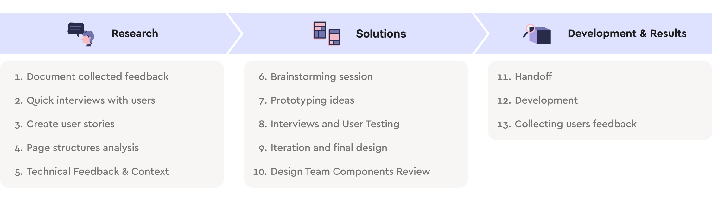
Page Structure: Finding the Common Pattern
Before designing anything new, I mapped all existing picking flows to understand what was actually happening across the product. Through that research, a clear pattern emerged: every picking flow — regardless of its specific logic — moved through the same three types of pages:
- A page where the worker selects the number of totes or orders to pick.
- A page where workers preview and select orders.
- A page where workers pick individual items.
This was the structural insight that unlocked the rest of the work. Instead of designing each flow from scratch, I redesigned these three page types as flexible templates — adaptable to any picking flow without losing consistency. Workers moving between flows would now recognize the same patterns and know where to look.
Basic Page Structures for Flows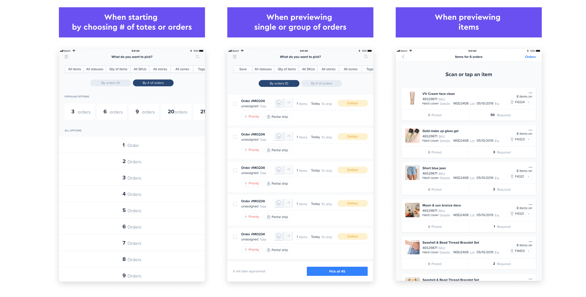
Picking Flows: Pages and Instances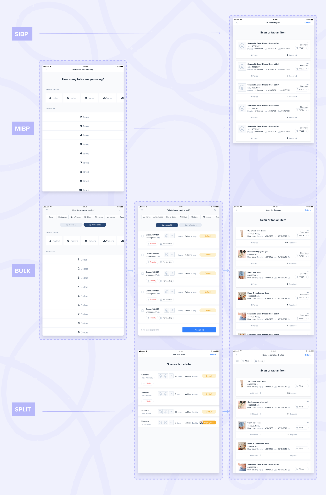
Item Card States and Behavior
The item card is the core unit of the picking experience — it appears in every flow and needs to communicate different information depending on the context. Rather than designing separate cards per flow, I defined a single card system with states that adapt to the current situation: what's been picked, what's still required, where the item is located, which tote it belongs to, and whether an issue has been reported.
This approach reduced visual fragmentation and made the card's behavior predictable — workers could develop a mental model of how it worked and apply it across every flow they used.
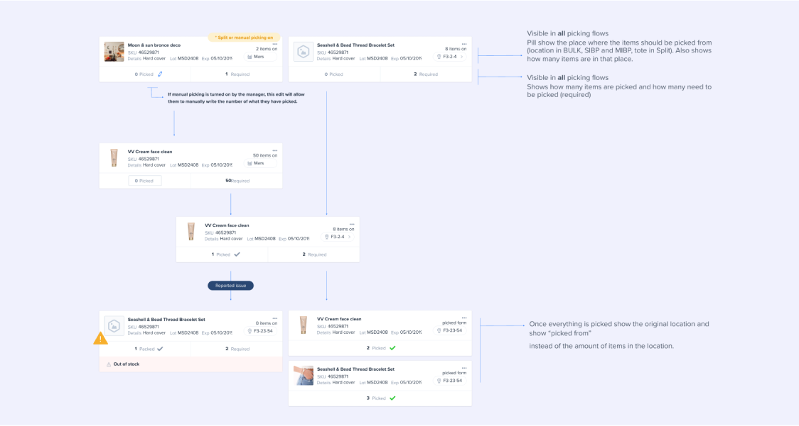
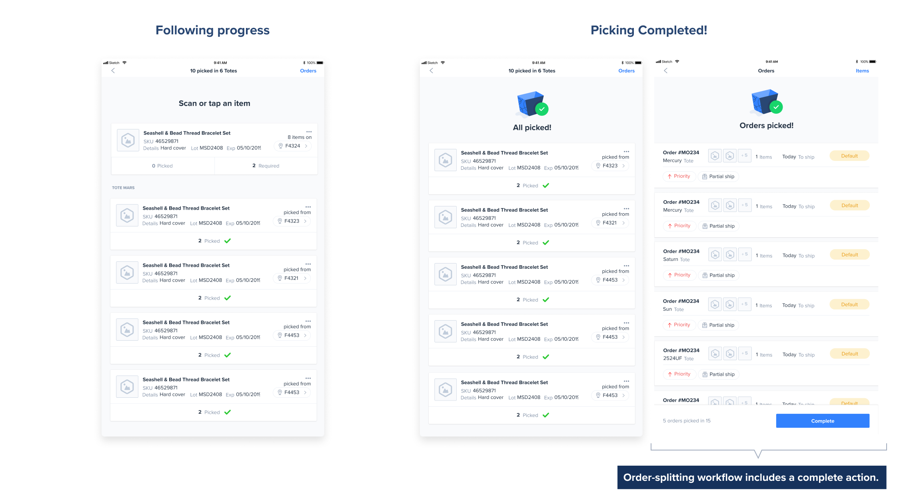
Picking Page Anatomy
The picking page is where workers spend most of their time. It needed to communicate several things at once without creating visual noise: what item to pick, where to find it, how many are needed, which tote to assign it to, and what to do if something goes wrong.
I structured the page into clear zones: item details and location at the top (always visible), the action card in the center (current instruction or status), and error reporting at the bottom (always accessible but not visually dominant). Each zone has a defined role so workers know where to look for each type of information.
The manual entry option is surfaced only when the administrator has enabled it — keeping the scanner as the primary and fastest path while giving workers a fallback when needed.
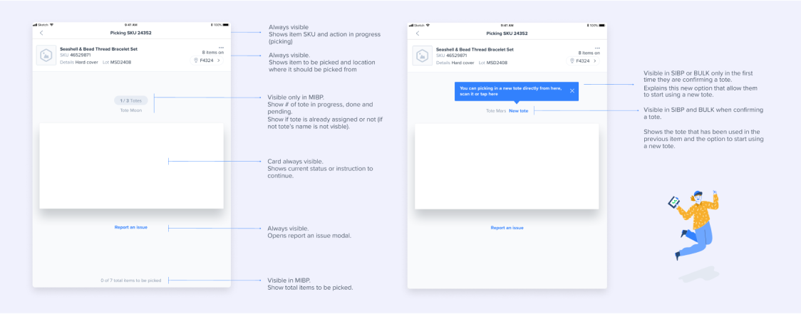
Picking Page Card States
The card at the center of the picking page changes state as the worker progresses through the flow — from scanning an item, to confirming a quantity, to assigning a tote, to completing the pick. Each state gives the worker exactly the instruction or feedback they need at that moment, without requiring them to navigate away from the page.
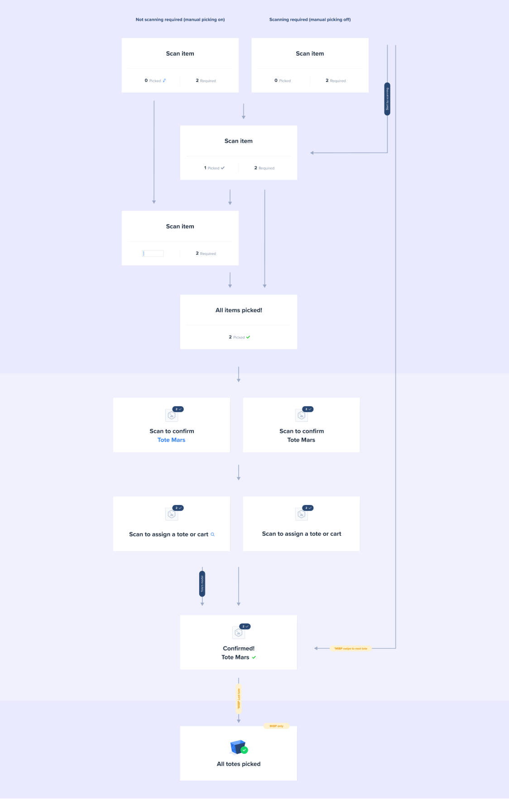
Picking Page Examples
A few examples of how the page and card behave across different permission configurations and progress states.
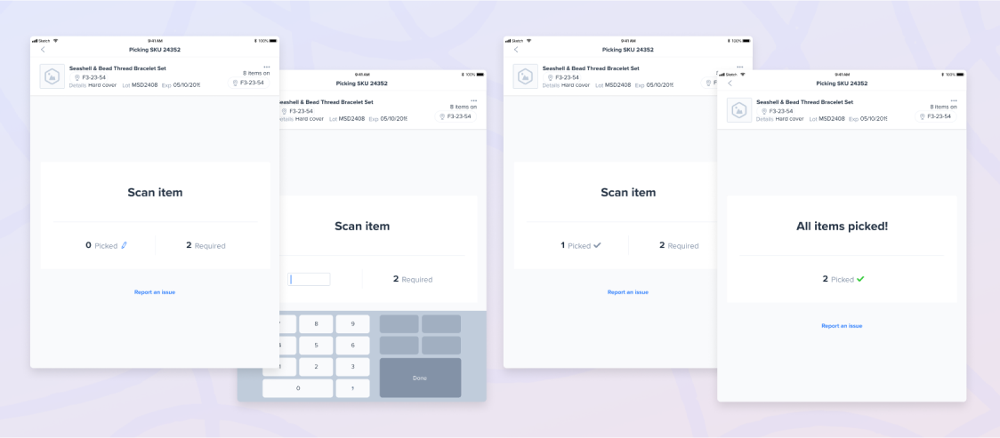
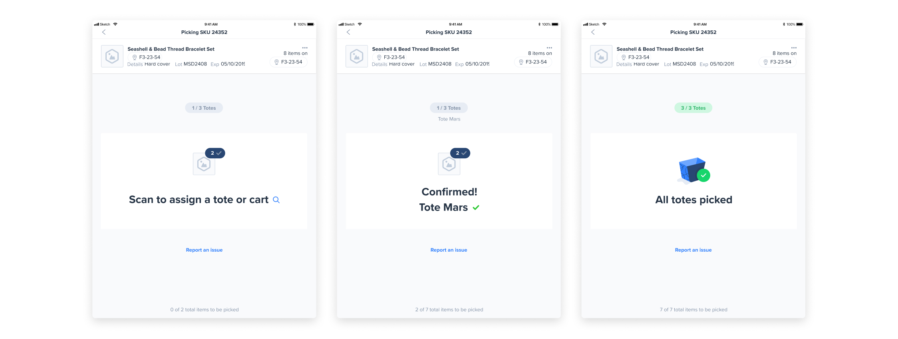
Error Handling and Edge Cases
Error states were one of the most consequential design problems in this project — poorly handled errors could stop a worker's entire session and delay downstream fulfillment operations.
Issue reporting was redesigned as a two-step flow: the worker first confirms they have the correct item (showing general item info before the specific issue is identified), then selects the error type and submits the relevant details to the manager. For certain error types, such as damaged or missing items, the system can automatically put related orders on hold — preventing other workers from wasting time on orders that can't be completed.
Tote assignment needed a manual fallback for situations where scanning wasn't possible. The tote selection modal keeps the search field sticky when scrolling, making it fast to find the right tote even with a long list. Available and unavailable totes are clearly separated.
Orders with errors at the end of a picking session are surfaced in a dedicated summary screen, listing each affected tote and the specific error per order. Workers receive clear instructions to move those totes to the QA zone — keeping the packing line moving without losing track of the exceptions.
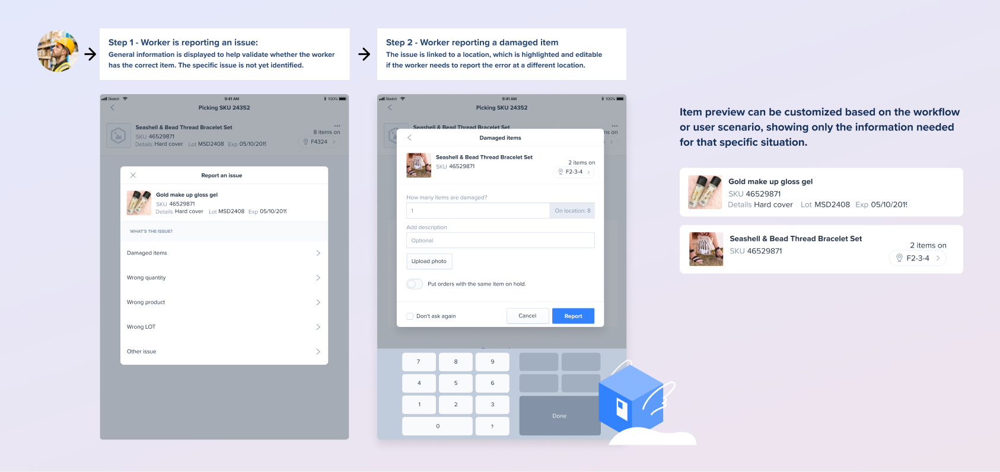
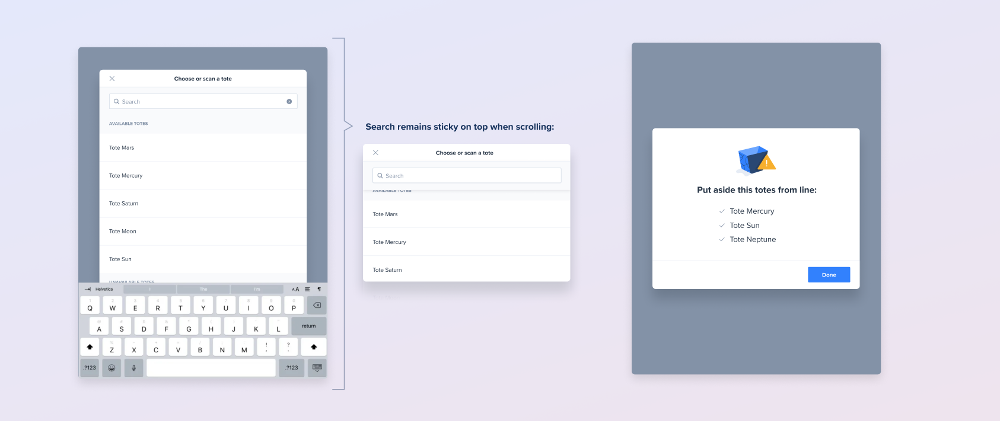
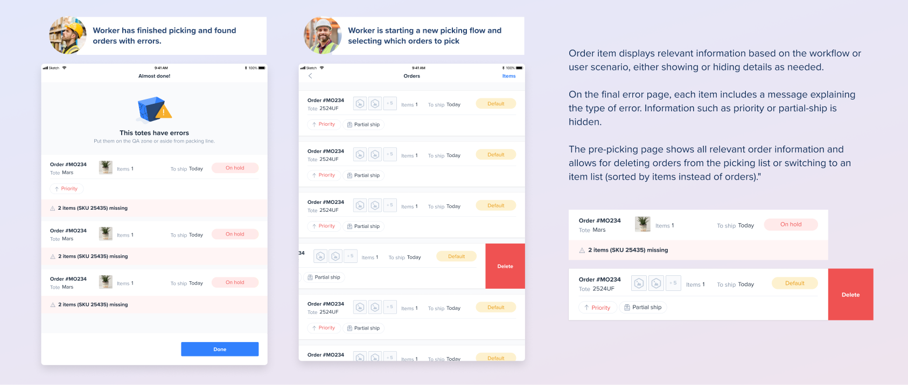
Impact and Learnings
The primary signal of success was qualitative: after the redesign, user feedback shifted from reports about confusion and workflow blockages toward more specific edge cases — indicating the core structural problems had been resolved. Workers could move between picking flows without relearning the interface, and error situations no longer required supervisor intervention to unblock.
The most important design decision was working backwards from the flows rather than forward from individual screens. Finding the three shared page structures first gave every subsequent decision a clear framework — it also made the engineering handoff cleaner, since the component system reflected the actual logic of the product rather than being screen-by-screen.
This project reinforced something I apply consistently: in high-frequency operational tools, consistency and predictability are more valuable than novelty. Workers using this app dozens of times per shift benefit far more from a system they can rely on than from features that require attention to understand.